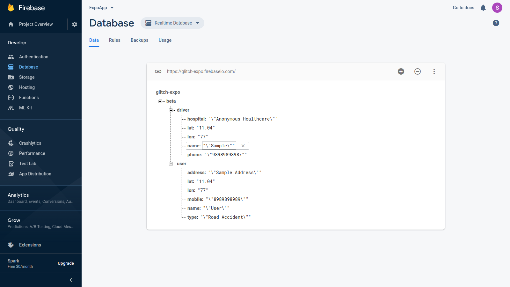
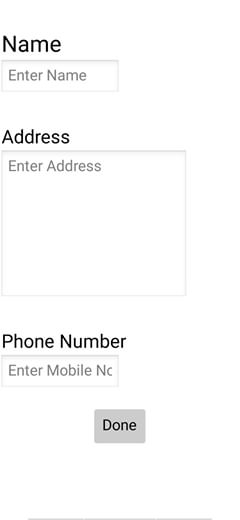
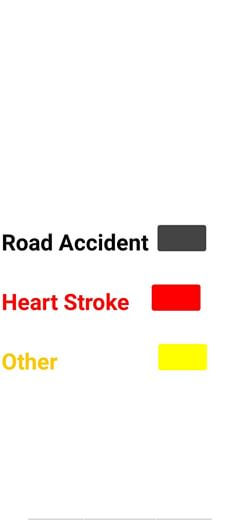
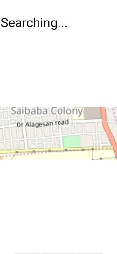

A brief
   
Project Pegasus was a simple mobile application me and my friends created for our school science
expo
in 2019.
The sole purpose of this project was to redfine the traditional ambulance services by implementing a
simple application that runs on low power to request for the nearest ambulance based on the user's
location.
We also devoloped an application for the ambulance drivers to recieve this request and proceed
by accepting it.
This was an application built using the MIT App Inventor harnessing the realtime database service
provided by Google Firebase.
The application uses the Google Maps API to satisfy the requirement of locating the user and
reaching them.